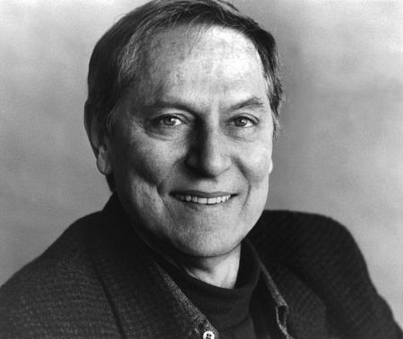

#9154 Liebe geht seltsame Wege
Alternativ: Love Is Strange


 IMDB-Wertung: 6.7 / 10
IMDB-Wertung: 6.7 / 10  Metascore: 0
Metascore: 0 
Als es im Juni 2011 zur Legalisierung der gleichgeschlechtlichen Ehe in New York kommt, wird auch Ben und George endlich die Chance gewährt, nach 39 gemeinsamen Jahren zu heiraten. Doch kurz nach ihrer Eheschließung müssen die Männer einen herben Dämpfer hinnehmen: Als Georges Musiklehrerstelle an einer katholischen Schule fristlos gekündigt wird, sind sie gezwungen, ihre Wohnung in Chelsea aufzugeben. Während George von einem benachbarten schwulen Polizisten-Paar aufgenommen wird, kommt Ben bei der Familie seines Neffen in Brooklyn unter. Doch die neue Wohnsituation erweist sich als problematischer als gedacht. Alle versuchen, Rücksicht aufeinander zu nehmen, doch das Provisorium wird immer mehr zum Dauerzustand und strapaziert die Nerven der Beteiligten zunehmend.
Jahr: 2014
Dauer: 94 Minuten
FSK: 0
Land: USA Studio: Sony Pictures ClassicsTonspuren: DD5.1 - ,
Untertitel:
Auflösung: 1080p (1920x1040) Größe: 6287 MB
Genre: Drama, Liebe
Regisseur: Ira Sachs
Drehbuch: Ira Sachs
Soundtrack:
Darsteller:
 Alfred Molina als George Garea
Alfred Molina als George Garea John Lithgow als Ben Hull
John Lithgow als Ben Hull- Darren E. Burrows als Elliot Hull
 Charlie Tahan als Joey Hull
Charlie Tahan als Joey Hull Cheyenne Jackson als Ted
Cheyenne Jackson als Ted Manny Perez als Roberto
Manny Perez als Roberto- Christina Kirk als Mindy
 Marisa Tomei als Kate Hull
Marisa Tomei als Kate Hull- Tank Burt als Doreen
- Christian Coulson als Ian
-  John Cullum als Father Raymond
 Harriet Sansom Harris als Honey
Harriet Sansom Harris als Honey Adriane Lenox als Principal
Adriane Lenox als Principal Jason Stuart als Officiant
Jason Stuart als Officiant Michael J. Burg als Bartender
Michael J. Burg als Bartender- Dovie Currin als Piano Student
- Daphne Gaines als Linda
 Sebastian La Cause als Marco
Sebastian La Cause als Marco Andrew Polk als Doctor
Andrew Polk als Doctor- Olya Zueva als Eugenia
- Toussaint Raphael Abessolo als Super (uncredited)
- Reginald L. Barnes als Churchgoer (uncredited)
- Damon C. Fields als Churchgoer (uncredited)
- Garlan Green als Congregation Member (uncredited)
- Keith Mackler als Injured Hipster (uncredited)
- John Petrizzi als Church Congregate (uncredited)
- Jacopo Rampini als Partygoer (uncredited)
 Shade Rupe als Wedding Guest (uncredited)
Shade Rupe als Wedding Guest (uncredited)- Alexander W. Smith als John (uncredited)
- Robert Tagliapietra als Wedding Guest (uncredited)
- Justin Michael Woods als Teacher (uncredited)
- James Zeiss als Science Teacher (uncredited)
- David Bell als David
- Henry Crouch als Henry
- Jeff Goad als Jeff
- Riko Higuma als Pianist
- Christopher King als Lawyer
- Julia Meynert als Violinist
- Jim Newman als John, Ian's Boyfriend
- Ira Spaulding als Choir Teacher
- Eric Tabach als Vlad
- Maryann Urbano als Social Worker
- Anahi Vidal als Girl
- Tatyana Zbirovskaya als Zlata
- Jessie C. Bouffier als Wedding Guest / Formal Concert Guest (uncredited)
- Paul Eifler als Algebra Teacher (uncredited)
- Nancy Marlowe Gordon als Theater Patron (uncredited)
- Danny L. Martin als Office Worker (uncredited)
- Josephine Pizzino als Lady Sings the Blues (uncredited)
- Gary Schnakenberg als Gym Teacher (uncredited)
Datei: X:\2014(G-M)\Liebe geht seltsame Wege (2014, FSK0, 1920x1040).mkv seit 19.07.2018
Festplatte: HD 2013(I-Z)-2014(A-Z)
 Es gibt insgesamt 136 Filme in der Gruppe '2014(G-M)'
Es gibt insgesamt 136 Filme in der Gruppe '2014(G-M)'